ISPO & RSPO Certification Readiness
Standards Met, Sustainability in Practice
Understanding ISPO and RSPO standards helps farmers recognize that sustainability goes beyond harvest yields; it also depends on how their plantations are managed.
Farmers are gaining a better understanding of sustainable plantation management, from fertilizer use and harvest management to environmental protection, as part of their journey towards more sustainable farming practices.
The Shift
From

Limited understanding
of standards
and systems
To
Farmers are
equipped to adopt
standards and
met the requirements